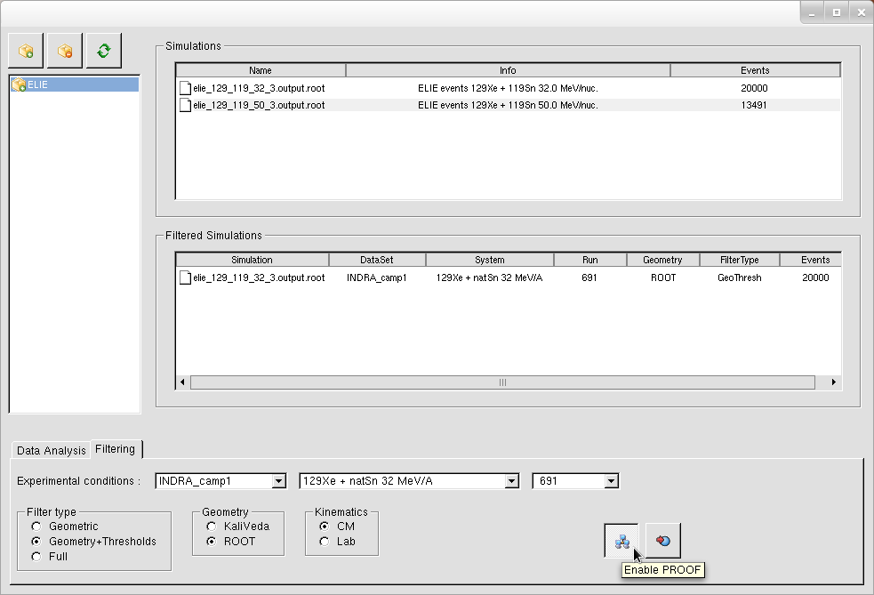
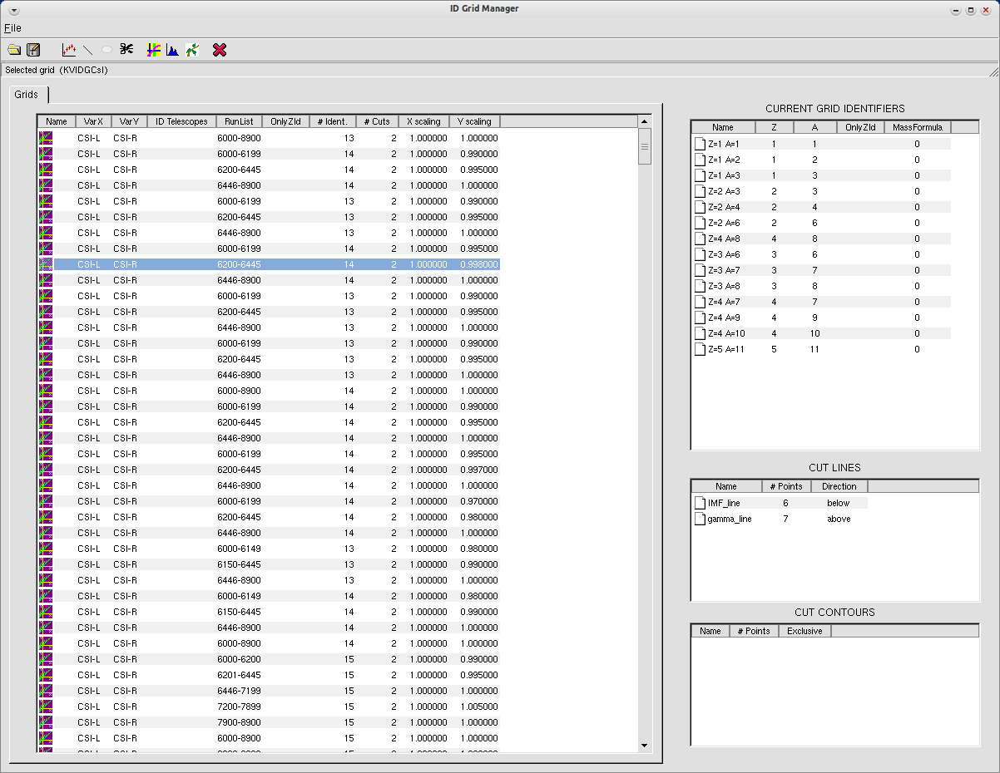
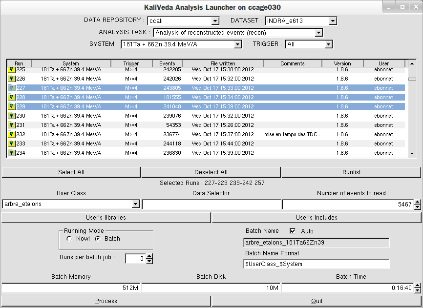

Command-line tools & graphical interfaces (GUI)
kaliveda
- ROOT/KaliVeda interactive session
kaliveda-config
- informations on installed version
KVTreeAnalyzer
- data analysis tool
KVSimDirGUI
- analyse & filter simulated data
ID Grid Manager GUI
- generate, edit, test identification maps & grids
ID Grid Editor GUI
- edit identification grids
KaliVedaGUI
- analyse data
KVDataBaseGUI
- manage databases for different datasets
update_runlist
analyse_logs
kaliveda
Command-line interface, a ROOT/KaliVeda interactive session
$ kaliveda
***********************************************************
* HI COQUINE !!! *
* *
* W E L C O M E to K A L I V E D A *
* *
* Version: 1.10/13 Built: 2017-01-27 *
* git: release-1.10.13@release-1.10.13 *
* *
* For help, read the doc on : *
* http://indra.in2p3.fr/kaliveda *
* *
* ENJOY !!! *
***********************************************************
kaliveda [0] KVSimNucleus Proj("66Zn",15.); // projectile energy 15AMeV
kaliveda [1] KVSimNucleus Targ("64Ni");
kaliveda [2] KVSimNucleus CN = Proj + Targ; // compound nucleus from fusion reaction
kaliveda [3] CN.Print()
KVNucleus Z=58 A=130 E*=429.83
KVParticle mass=121445 Theta=0 Phi=0 KE=503.595
kaliveda-config
Access informations on installation of KaliVeda
$ kaliveda-config --help
Usage: kaliveda-config [options]
--version Print the KaliVeda version
--bindir Print the executable directory
--libdir Print the library directory
--incdir Print the header directory
--libs Print linker directives for all libraries
--builddir Print the CMake build directory
--srcdir Print the source directory
--gitinfos Print the git branch and commit
--examples Print the examples directory
--help Print this message
KVTreeAnalyzer
Analysis tool for TTrees and/or histograms

KVSimDirGUI
PROOF-enabled graphical interface for managing, analysing and filtering simulated data.

ID Grid Manager GUI
Graphical interface for drawing, visualising, testing etc. identification grids.

ID Grid Editor GUI
Identification grid editing interface
Canvas with dynamic zoom, pan & scan using mouse. Grids
lines can be translated, rotated about an arbitrary point,
scaled.
Access to many tools for identification grid generation from
data, fitting, testing, etc.
KaliVedaGUI
Graphical interface for running data analysis tasks.

KVDataBaseGUI
Graphical interface for creating and modifying the database of experimental runs and systems for each dataset.

update_runlist [data repository name] [dataset name] [data type]
Used to update the database of available data files in the data repository. Normally this database is kept automatically up to date, but this tool can be used in case things go wrong: files which can be seen to exist in the repository are not accessible from the KaliVeda analysis environment (KaliVedaGUI etc.).Typing 'update_runlist' without arguments prints a reminder of the arguments to give.
[data repository name] : name of an
accessible repository e.g. defined in user's .kvrootrc
file. The repository must be LOCAL, we cannot check remote
repositories.
[dataset name] : name of a known dataset, e.g. INDRA_camp1
[data type] : one of the known data types, e.g. raw, recon, ident or root
[dataset name] : name of a known dataset, e.g. INDRA_camp1
[data type] : one of the known data types, e.g. raw, recon, ident or root
analyse_logs [jobname format] [list of log files]
Used to analyse the large number of BQS log files produced by "parallel" analysis of many runs at the IN2P3 Computing Centre. The result is a listing of which jobs were successfully completed, which were KILLED, etc., along with (for the successful jobs) information on the requested, minimum, mean and maximum CPU time, memory and scratch disk used, in order to help users to better tune their ressource requests to the needs of their analysis (users who systematically overestimate these requests risk punishment by the CCIN2P3!)Typing 'analyse_logs' with no arguments prints a reminder of the arguments, and an example:
Analysis of Grid Engine (CCIN2P3) batch log files
analyse_logs [jobname]
arguments are:
[jobname] common root of name of all jobs to analyse
e.g. "PbAu29MeV" for jobs with names like "PbAu29MeV_R8213" etc.
The programme will attempt to read all files with names like
PbAu29MeV_R8213.o5647093
PbAu29MeV_R8214.o5647094
etc. in the current directory
Web design based on www.xmms.org - Hope you
don't mind! Thankyou!